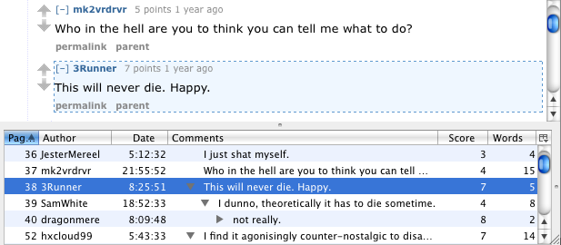
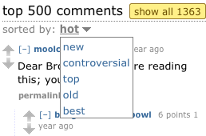
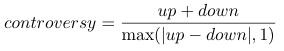
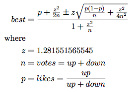
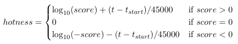

Plottit User Interface
The Plottit pane will appear at the bottom of the window whenever you visit a Reddit discussion. It contains the comments table on the left, and one of the following items on the right: a frame with the selected comment HTML, a scatter plot, a histogram or a treemap.When the Reddit discussion is loaded completely, Plottit requests the Reddit server for a machine-readable version of the discussion, this is then used to populate the table and draw the graphs. Note that because the Reddit page and the data in the Plottit pane are not loaded simultaniously, small differences may occur.
Plottit can be hidden by toggling the button in the Firefox navigation toolbar. When Plottit is disabled it will not send requests to the Reddit server.
A scatter plot is often used to examine the correlation between two variables. If there is a high correlation, such as between the number of words and the number of characters of a comment, the dots will form a straight line; if there is little or no correlation, such as between the number of characters of a comment and the time that it was posted, the dots will be scattered all over the figure.
The figure below gives an example that lies inbetween these cases: how the number of votes depends on the time the comment was posted. It is common practice to put the independent variable (in this example posted after) on the X-axis and the variable that depends on it (i.e. the votes) on the Y-axis. You can see a clear negative correlation between them, the number of votes decreases as the time increases.
When you hover your mouse cursor above the X or Y axis, the axis will be highlighted in light blue. When this is the case, panning and zooming will only work on that axis, the other axis is temporarily locked.
When the Autoscale box is checked, the zoom level will be reset each time you open a new discussion or switch to another browser tab. When it is unchecked the scale will be preserved between discussions.
The comment that is selected in the table whill be hightlighted in the scatter plot by a bigger circle. Conversely, when you click on a dot in the scatterplot, the corresponding comment will be highlighted in the comment table.
You can select which comment property to count by means of the drop-down box labeled X. The box next to it will determine the size of the bins. Not every combination of property and bin size makes sense, some combinations will result in very narrow or wide bins.
When you hover your mouse cursor above the X or Y axis, the axis will be highlighted in light blue. When this is the case, panning and zooming will only work on that axis, the other axis is temporarily locked.
When the Autoscale box is checked, the zoom level will be reset each time you open a new discussion or switch to another browser tab. When it is unchecked the scale will be preserved between discussions.
In the treemap example below, the size of each rectangle is determined by the number of votes that the comment received. This can be selected by the Size drop down box. With the Color drop down box you can select the comment property that is used to color the rectangles, in this case the depth (top-level comments are drawn in blue, comments with level 10 are in red).
When you click on a rectangle in the treemap, the corresponding comment will be highlighted in the comments table. When you click the same rectangle twice, its parent comment will be selected and collapsed (provided that the comments table is in tree-mode). This can be repeated until the top-level comment is selected and collapsed.
When the Cushions check box is checked, the rectangles are drawn as cushions. This may be slow on old PCs, especially when you enlarge the treemap. When you uncheck the Cushions check box, the rectangles are rendered in a single color with a black outline. This makes it harder to see the hierarchy but makes the individual rectangles stand out more.
If you want to know the details on how the cushions are rendered you can read the following article (PDF). The treemaps in Plottit are squarified treemaps, refering to the squarify algorithm (PDF) that is used to lay out the rectangles.
The treemaps in Plottit were inspired by programs that can create a treemap of the files on your disk, which is very useful if it's almost full and you want to examine which files and directories are the bigest. There are implementations available for this in OS-X, Linux and Windows.
Comment HTML
The Comment tab shows the currently selected comment as HTML. Any link you click on will be opened in a new browser window.
Scatter Plot
The second tab, named Plot, displays a scatter plot when selected. It shows the discussion as a collection of orangered dots where every dot represents one comment.
The position of each dot along the X and Y axes depends on the values of two properties of the comment, which can be choosen by means of the drop-down labeled X and Y.
Histogram
This tab contains a histogram when selected. A histogram will group values in bins and will draw a bar for every bin, the height of which depends on the number of times a variable occurs in that bin. In the example below, the UTC date/time the comments were posted have been counted in groups of one hour. There were 3 comments posted between 5:00 and 6:00, 8 comments between 6:00 and 7:00, etc.
Treemap
The last tab contains a treemap. This is a visualisation of a tree where every node of the tree is drawn as a rectangle, the size of which depends on a certain property of the node. The layout of the rectangles is such that it preserves the hierarchy of the tree; child nodes are laid on top their parents. The hierarchy can be emphasized by rendering every rectangle as a cushion. A Reddit discussion has the form of a tree where comments are the tree nodes that together form a hierarchy.
Comments Table
The Comments table contains a row for each comment on the Reddit page. A comment has certain properties, such as the author and the score, which are listed in the tables columns. There are many of these properties, they are explained in detail later in this section. Most of them are hidden by default, you can configure which columns are visible by clicking the button in the top right corner of the table. You can reorder the columns by dragging/dropping them and resize them using the table header separators.You can sort the table for every column by clicking its header; clicking the same header again reverses the order. The only exception is the Comment column, when you click on this header the comments column switches between a tree structure and a flat list. In tree-mode, a comment is only sorted by comparing it with its siblings so that the structure of the discussion remains intact (this is also how the Reddit page itself is sorted). In flat-mode however, the rows are sorted over the complete discussion.

The comments table in tree mode showing a selected row and its corresponding highlighted comment in the Reddit page.
When the table has the keyboard focus, the up and down arrows select the next and previous comment and the left and right arrow collapse and expand a comment. This allows you to easily navigate the discussion using only the keyboard.
Some of the columns, for example the up and down votes, are rendered in an italic font. This is to indicate that this value is fuzzed by the Reddit server to combat spam and therefore does not represent the actual value, it has been deliberately modified. The more votes a comment has received, the more this number is distorted. This is also true for the properties that are derived from the number of up and downvotes such as the likes and best percentages. Only the score and hot values are not affected because Reddit fuzzes the votes in such a way that these numbers remain the same.
The rest of this section explains all the available columns. The next section will discuss the comment HTML pane and the visualizations.

The sort menu on the Reddit page
It is convenient to have the Reddit page order as a seperate column in the table because it may otherwise not be possible to sort the table in exactly the same order as the page, even if you click the correct column header. For instance, when sorting by score, Plottit cannot derive the original page order if two comments have the same score.

If the difference between the number of upvotes and downvotes is close to zero, the denominator will become small and therefore the controversy will become large. The maximum with 1 is taken to prevent division by zero in case the number of upvotes and downvotes are equal.
ID Column
This is the comments identifier. Every Reddit comment contains a unique ID that is used, for example, in a URL that links to that specific comment.Page Order Column
This number represents the position of the post in the current Reddit page. The Reddit page can be sorted independently of Plottit by selecting the sort order from the menu at the top of the discussion (see the screen shot below). This allows you to sort the page by: date (old/new), score (top), controversial, hot and best.Author Column
The Redditor who wrote the comment.Words Column
The number of words in the comment.Characters Column
The number of characters in the comment.Date Column
The date and time when the comment was posted. This is the local date in the time zone specified in your computers conguration settings.You can select the format in which this date and/or time is displayed by right-clicking the column header.
UTC Date Column
The UTC date and time when the comment was posted. UTC (Coordinated Universal Time) is a time stamp that is independent of your local time zone. UTC is practically the same as GMT, which was its predecessor.You can select the format in which this date and/or time is displayed by right-clicking the column header.
Age Column
The age of the comment. This is the difference between the time the comment was posted and the time when the page was loaded. It therefore changes each time you reload the page.Posted After Column
The time difference between the start of the disussion and the time that the comment was posted to this discussion.Depth Column
The depth of the comment in the discussion tree. A top level comment has a depth of 1, its direct children have depth 2, its grand children 3, et cetera.Replies Column
The number of direct replies to a comment.Comment Column
The comment text. By clicking on the header you can toggle between displaying the discussion as a tree or as a flat list.Up Column
The number of upvotes the comment has received.Note: this column is fuzzed by Reddit and is therefore less accurate for comments having a lot of votes.
Down Column
The number of downvotes the comment has received.Note: this column is fuzzed by Reddit and is therefore less accurate for comments having a lot of votes.
Votes Column
The total number of votes the comment has received. In other words: the number of upvotes plus the number of downvotes.Note: this column is fuzzed by Reddit and is therefore less accurate for comments having a lot of votes.
Score Column
The comments score. That is: the number of upvotes minus the number of downvotes.Note: this column is not affected by Reddits vote fuzzing.
Likes Column
The percentage of voters that liked the comment. In other words, it is the percentage of votes that are upvotes. It is calculated from the number of up and downvotes as follows: likes = 100 * up / (up + down).Note: this column is fuzzed by Reddit and is therefore less accurate for comments having a lot of votes.
Best Column
Consider a discussion of two comments, one with 50 upvotes and 30 downvotes, and the other with 10 upvotes and no downvotes. When you sort the discussion by the score value, the first one, which has a score of 20, will appear above the second, which has a score of 10. Since only 62.5% of the voters likes the first post and all of them like the second, you can ask yourself if this is fair and if it wouldn't be better to sort the discussion by the percentage of upvotes instead.The answer to this is question is no. That only works when the number of votes for every comment is large enough so that the likes percentage is an accurate representation of the real fraction of redditors that like the comment. However, for comments that only have a few votes, the likes value will usually be inaccurate. For intance, comments with only one vote can only have a 0% or 100% likes percantage. If you sort a discussion by the likes column you can see for yourself that the top of the table is dominated by comments that have the initial score of 1 upvote and 0 downvotes.
So what would be a fair ordering mechanism then? It would have to put more trust into comments with many votes and take the comments with only a few votes with a grain of salt. Instigated by Randall Munroe, the XKCD guy, Reddit aims to do this with the lower bound of the Wilson score interval and calls it the best value.

By replacing the ± sign with either a + or a -, you get the upper or lower bound of an interval of which you can say, with 80% confidence, that the real likes percentage lies within that interval. This interval will become smaller when the number of votes increases.
Reddit only uses the lower bound of this interval (calculated with the - sign). So a best value of 65% means that you can say, with 90% confidence, that at least 65% of the votes are upvotes.
Note: this column is fuzzed by Reddit and is therefore less accurate for comments having a lot of votes.
Controversial Column
A measure of the controversy of the comment. This is calulated with the following formula:The up + down in the numerator causes that the contoversy increases when the total number of votes increases. For example, a comment with 5 upvotes and 4 downvotes is more controversial than a comment with 4 upvotes and 3 downvotes.
Note: this column is fuzzed by Reddit and is therefore less accurate for comments having a lot of votes.
Hot Column
The hotness of the comment. This is a measure that tries to strike a balance between promoting the newest comments and the comments with the highest scores.The hotness is a relative measure; calculating the hotness of a single comment doesn't tell us much, it only becomes usefull when the hotness of one comment is compared to that of another.
The hotness is calculated as follows:

Let's first examine what happens if the score is positive (the score is the upvotes minus the downvotes as usual). You can see that the hotness is the sum of two terms, the first of which depends on the score and the second on the time (t) that the comment was posted. The log10(score) makes that the hotness increases with the score but with a diminishing return; if a comments score would be multiplied by 10 its hotness would increase by 1.
The second term calculates first the number of seconds that have elapsed between a certain start date (tstart) and the date that the comment was posted (t). The start date that reddit uses is 2005-12-08 at 07:46:43 but it could be any date as long as it's earlier than the oldest comment. The number of elapsed seconds is subsequently divided by 45000 seconds. 45000 seconds is equal to 12.5 hours so if comment A is posted 12.5 hours later than comment B, comment A will be 1 point hotter than comment B, provided that they have the same score. Comment B would need to have ten times the score of comment A to catch up with A in hotness.
You can calculate that, for yesterdays comment to be just as hot as todays, it needs to have about 83 times the score as todays comment. If a comment is exactly two days old, it needs to have a score of at least 6919 for to be hotter than a comment that is posted right now and has a score of 1.
Comments that have a score of 0 always have a hotness of 0 as well. Comments with a negative score will have a negative hotness because the elapsed time divided by 45000 will be subtracted from the first term (which is smaller). Strangely enough, the first term is positive which means that a comment with a score of -2 is hotter than a comment with score -1 that is posted at the same time.
Because the time that a comment was posted doesn't change, a comments hotness can only change if its score changes. Reddit prohibits users to vote on comments that are older than six months so the hotness of these comments becomes fixed at that time. By calculting the score from the elapsed time since an arbitrary start date, Reddit can more easily archive and cache these pages than when it would calculate the hotness directly from the age of the comment, which keeps on changing.
Note: this column is not affected by Reddits vote fuzzing because it is directly calculated from the score, which is unaffected as well.